Families
Apply for a free volunteer doula to support you through labor, birth, and the first eight weeks postpartum. Application takes 15 minutes.
Start your applicationLouisiana-rooted maternal health · Est. 2023
Our mission is to empower families, promote birth excellence, and bridge the health equity gap in our community.
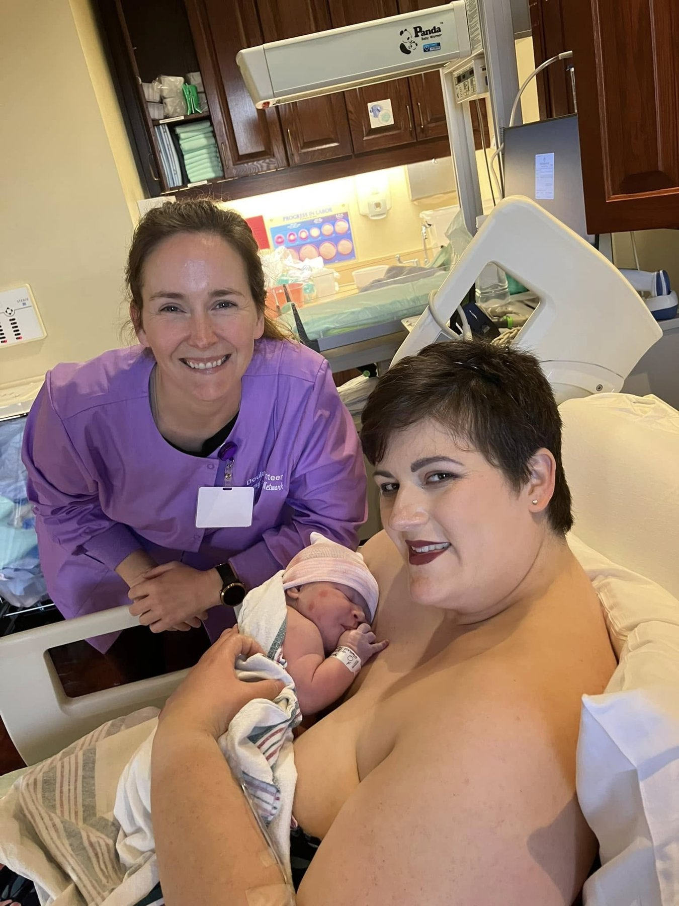
Apply for a free volunteer doula to support you through labor, birth, and the first eight weeks postpartum. Application takes 15 minutes.
Start your applicationBecome part of the largest volunteer doula network in Louisiana and help change maternal health outcomes in your community. Apply now to join our next ICEA-certified cohort.
Apply to join the network$500 funds a birth. $2,000 funds a training seat. Or sponsor our January 8 gala. Every gift is tax-deductible and goes to a specific line item we can show you.
See ways to giveNow enrolling · Tau Cohort
Tau Cohort · Feb 15–20, 2027 · in-person day in Baton Rouge, Louisiana
ICEA-approved training. Four live evenings online + one in-person Saturday in Baton Rouge. Scholarships funded by Louisiana Blue Foundation and Love One Louisiana Foundation. Scholarship applications close Jan 10; course registration closes Jan 29.
Scholarships close: Sun, Jan 10
Save the date · Awards gala
In Her Honor: A Legacy in Lavender · January 8, 2027
Renaissance Hotel, 7000 Bluebonnet Blvd, Baton Rouge, LA. An evening in honor of the women of our community, and the people who have shown up for them.
Friday, January 8, 2027 · 6:00–9:00 PM · Renaissance Hotel, Baton Rouge, LA
Gala title sponsor: My Bump Hub.
A doula is a non-clinical support person who stays beside you during labor and the days afterward. Doulas don’t replace nurses, midwives, or doctors. They sit alongside the medical team and make sure you have a steady hand, a familiar voice, and answers to your questions when you need them.
For families served by Mary’s Hands Network, our IRB-tracked outcomes show a 65% reduction in cesarean rate and an 84% reduction in preterm births compared to Louisiana state averages. Continuous, culturally humble doula support is one of the most evidence-backed interventions in maternal health, and we believe it should be free for any family who wants it.
More broadly, continuous doula support has been shown to reduce cesareans, lower preterm birth rates, increase breastfeeding initiation, and improve overall birth experience. The evidence for doula care is among the strongest in maternal health.
Built one cohort, one family, one birth at a time.

Free doula care, education, and community gatherings for the families we serve.

Training the birth workers who serve our communities, to ICEA and MHN standards.

At community events, in policy rooms, and in the outcomes data.
Every doula in our network is trained alongside their cohort, then certified to serve Louisiana families.
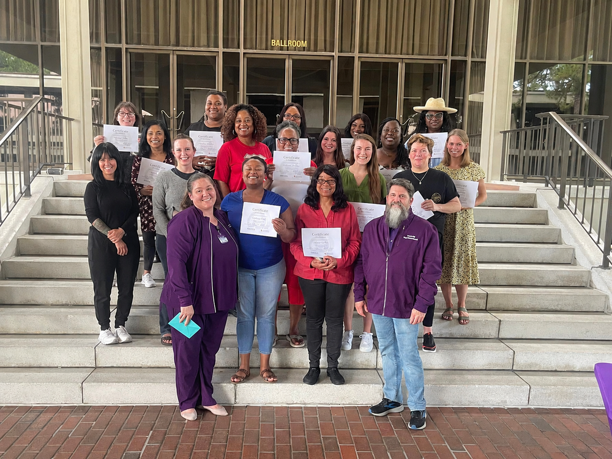


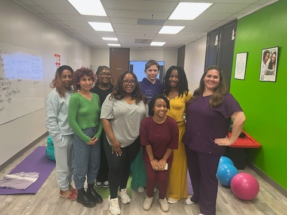
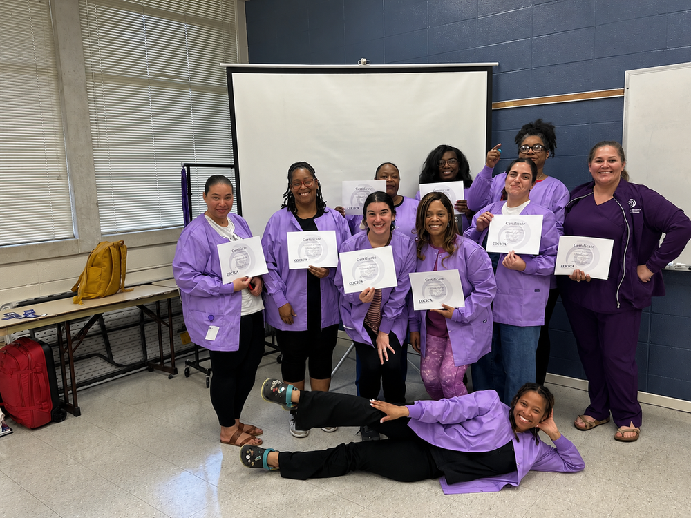

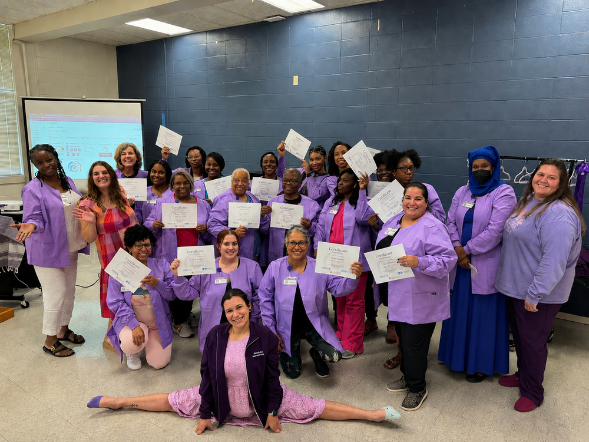
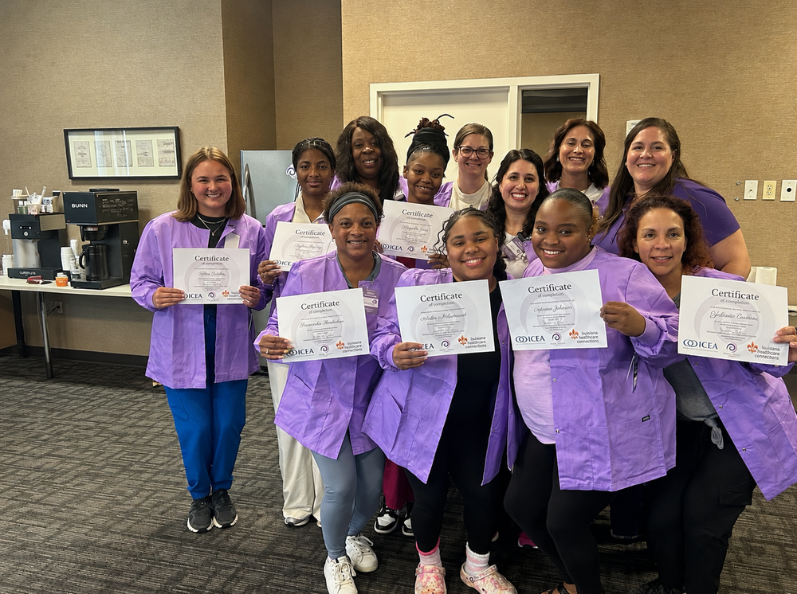

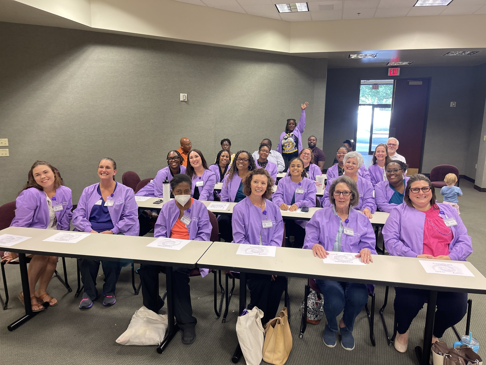
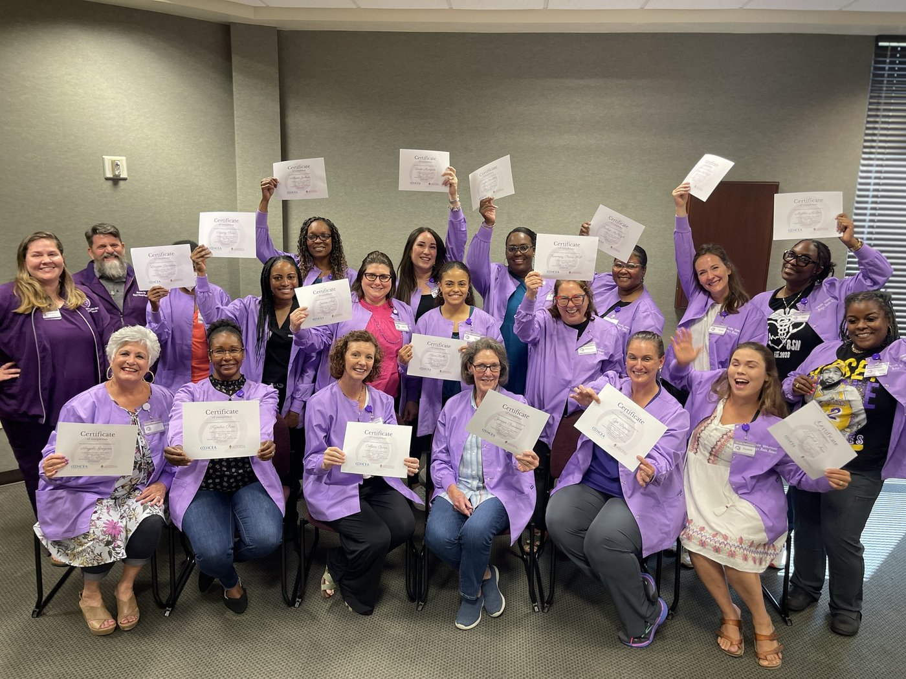
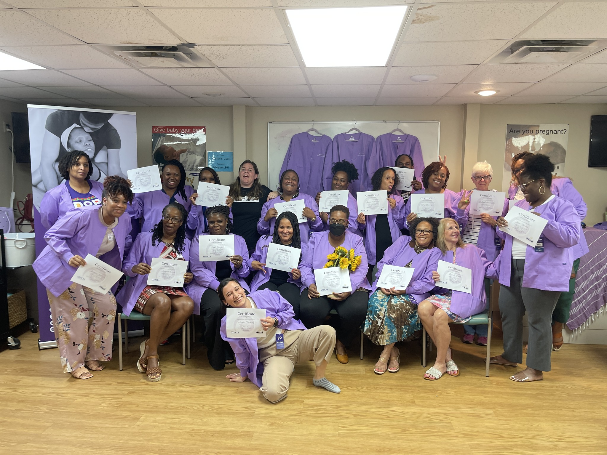


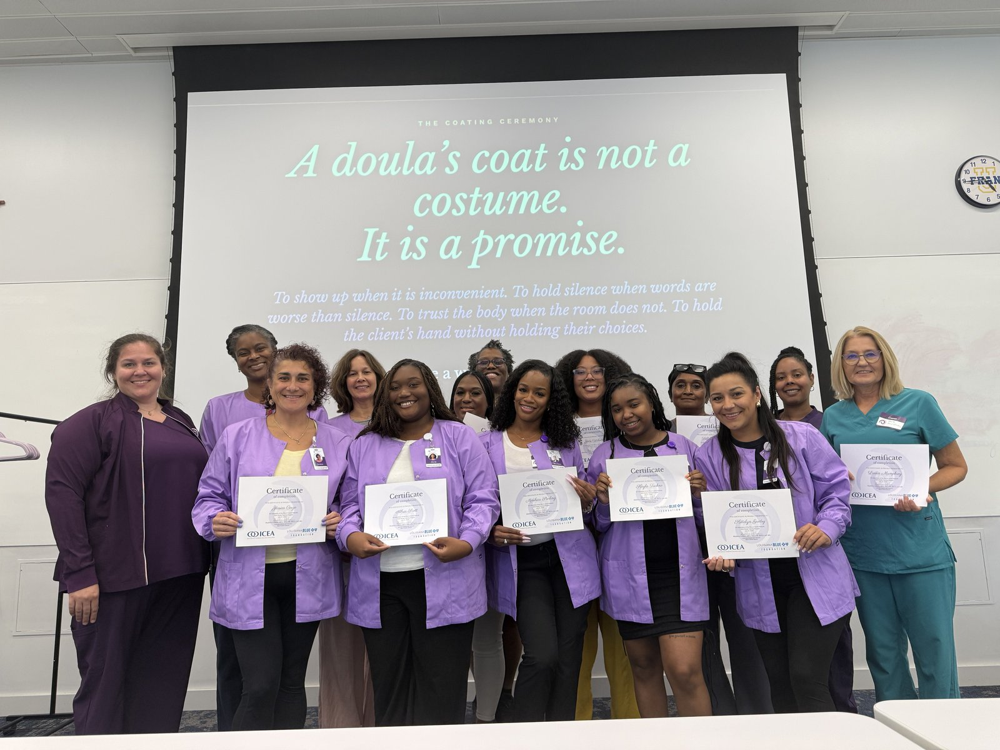
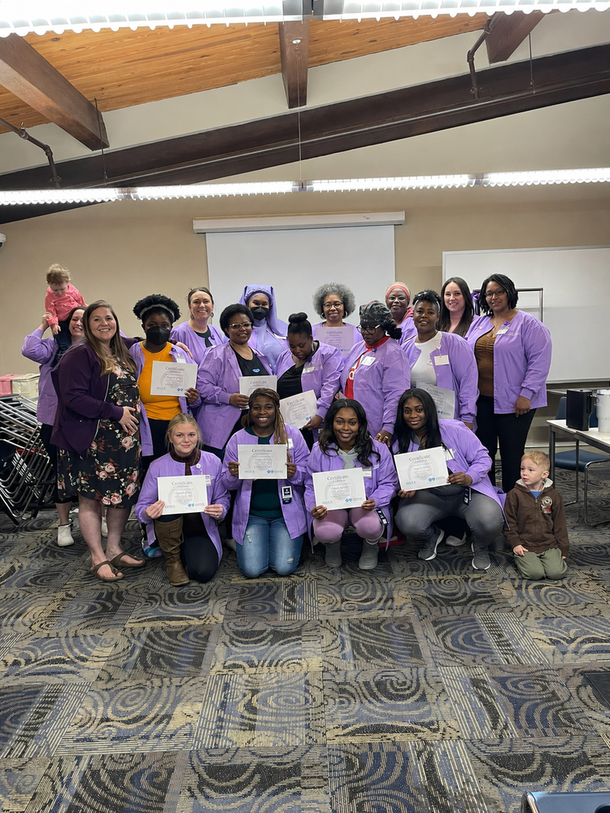
The hospitals, foundations, and statewide organizations who make our work possible.


Every doula visit, training cohort, and birth are funded by donors like you. $500 funds a birth. $2,000 funds a training seat. Tax-deductible to the full extent of the law.